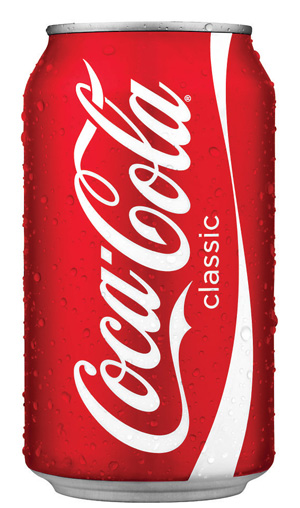

Coca-Cola
Coca-Cola is a carbonated soft drink. It is produced by The Coca-Cola Company of Atlanta, Georgia, and is often referred to simply as Coke (a registered trademark of The Coca-Cola Company in the United States since March 27, 1944). Originally intended as a patent medicine when it was invented in the late 19th century by John Pemberton, Coca-Cola was bought out by businessman Asa Griggs Candler, whose marketing tactics led Coke to its dominance of the world soft-drink market throughout the 20th century. The name refers to two of its original ingredients: kola nuts, a source of caffeine, and coca leaves. The current formula of Coca-Cola remains a trade secret, although a variety of reported recipes and experimental recreations have been published.
The company produces concentrate, which is then sold to licensed Coca-Cola bottlers throughout the world. The bottlers, who hold territorially exclusive contracts with the company, produce finished product in cans and bottles from the concentrate in combination with filtered water and sweeteners. The bottlers then sell, distribute and merchandise Coca-Cola to retail stores, restaurants and vending machines. The Coca-Cola Company also sells concentrate for soda fountains to major restaurants and food service distributors.
The Coca-Cola Company has, on occasion, introduced other cola drinks under the Coke brand name. The most common of these is Diet Coke, with others including Caffeine-Free Coca-Cola, Diet Coke Caffeine-Free, Coca-Cola Cherry, Coca-Cola Zero, Coca-Cola Vanilla, and special versions with lemon, lime, or coffee. In 2013, Coke products could be found in over 200 countries worldwide, with consumers downing more than 1.8 billion company beverage servings each day. Based on Interbrand's best global brand study of 2015, Coca-Cola was the world's third most valuable brand.